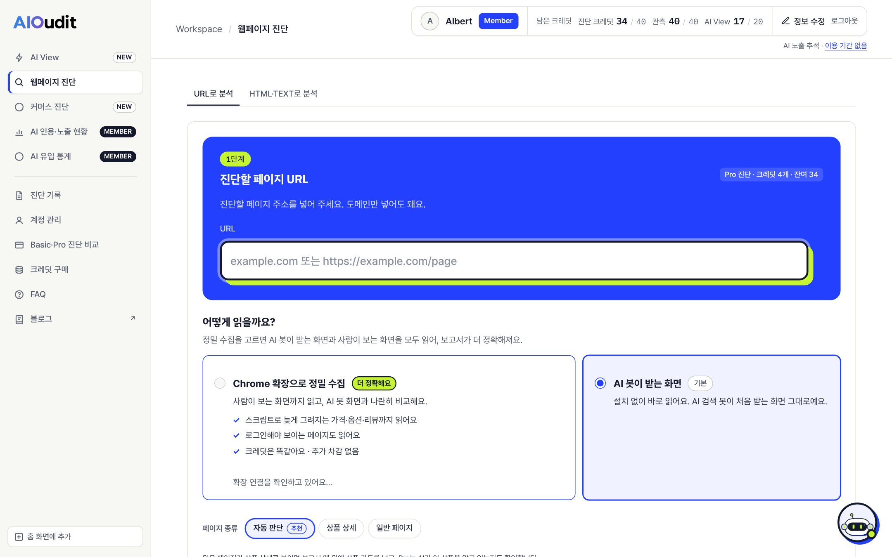
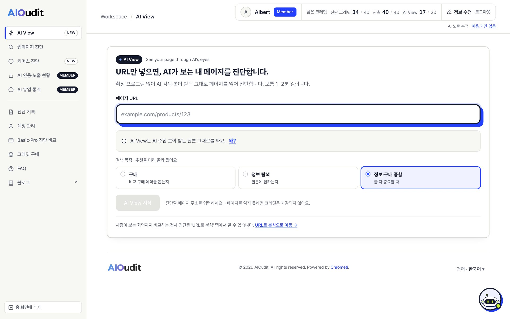
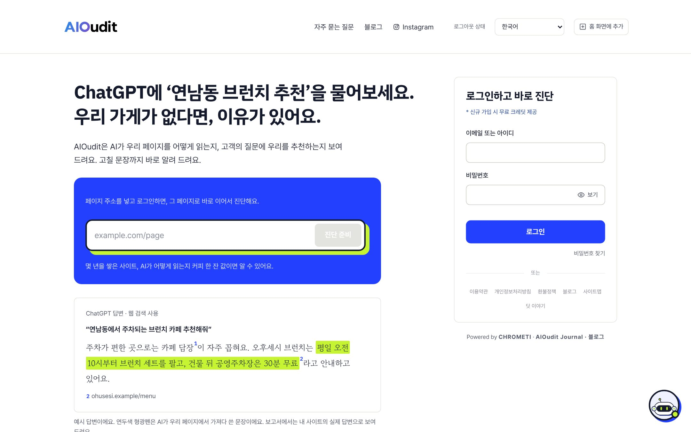
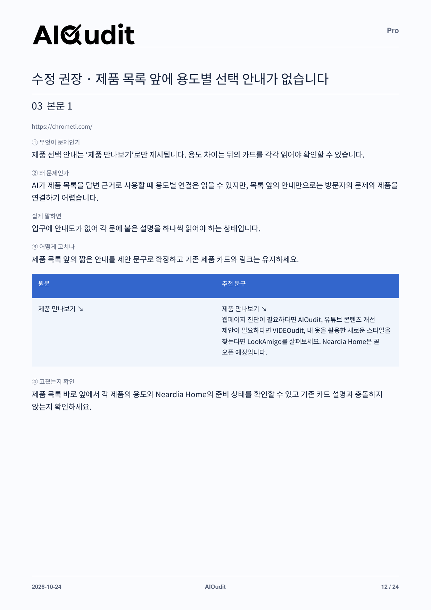
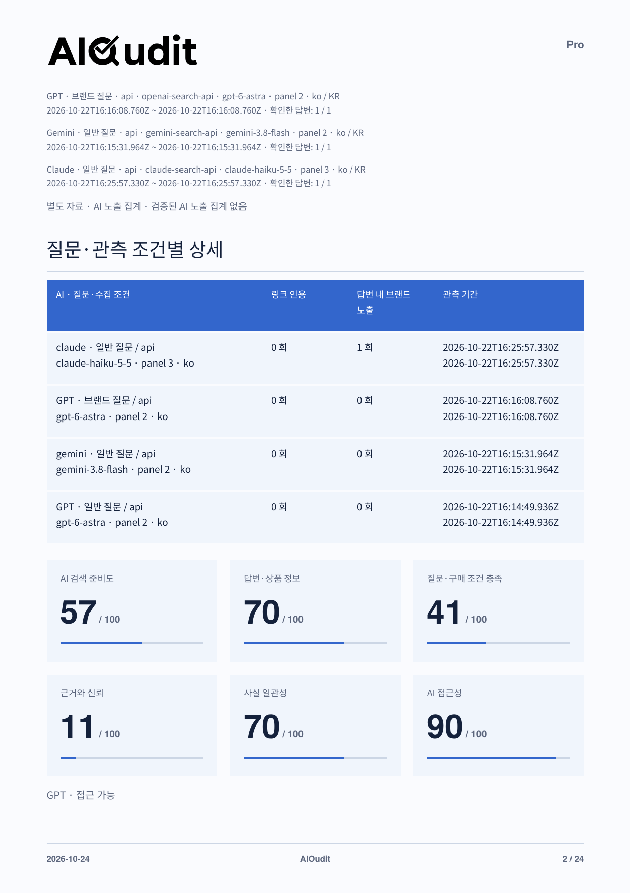
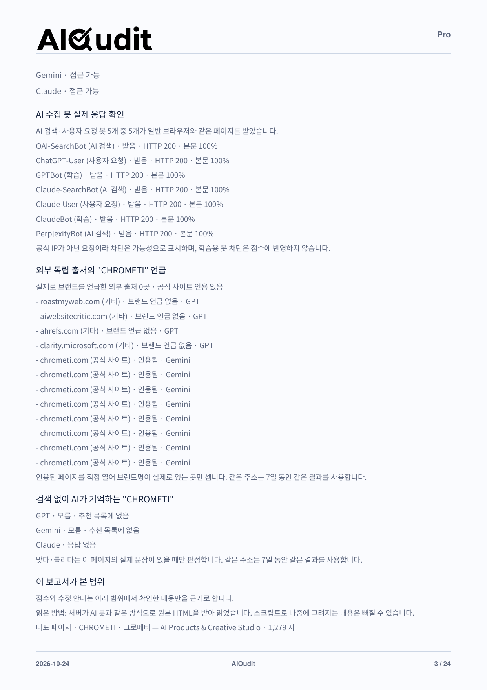
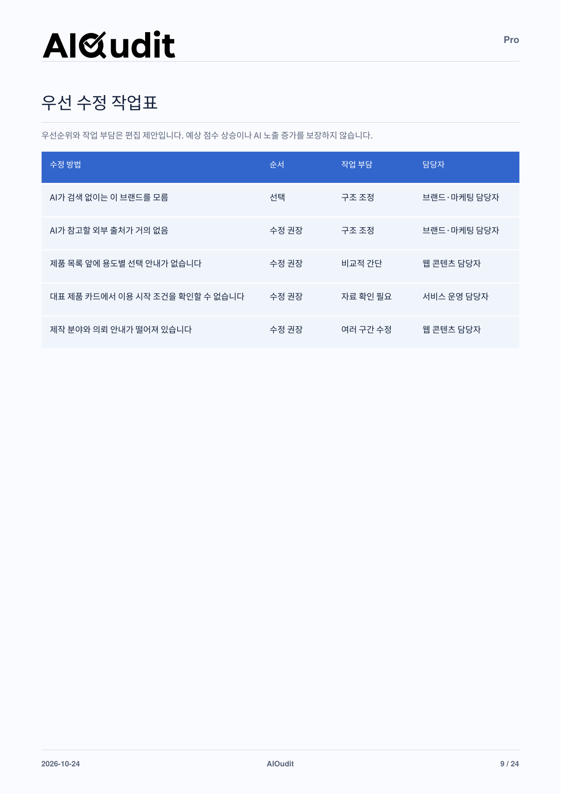

AI SEARCH · FROM INSIGHT TO ACTION
AIOudit
ChatGPT에 물어보세요.
우리가 없다면, 이유가 있어요.
주소 하나만 넣으면 AI 검색 봇이 받는 화면 그대로 페이지를 읽고, 고객이 실제로 묻는 질문을 ChatGPT·Gemini·Claude에 던져 답변에 우리가 나오는지 확인합니다. 무엇을 고치면 되는지는 바로 붙여 넣을 문장과 고친 뒤 확인 방법까지 드려요.
COFFEE몇 년을 쌓은 사이트, AI가 어떻게 읽는지 커피 한 잔. Basic 진단 1회 약 $3.7(Site 팩 기준)부터입니다.
01 / 웹페이지 진단
주소만 넣으면,
AI 봇의 눈으로 읽습니다.
같은 페이지라도 방문자가 구매를 결정하려는지, 정보를 찾으려는지에 따라 필요한 답이 달라집니다. 목적을 고르고 URL을 넣으면 설치 없이 읽기부터 진단까지 이어집니다.
- 01
검색 목적 선택
구매, 정보 탐색, 정보·구매 종합 중에서 직접 고릅니다. 도메인만 넣어도 https://를 자동으로 붙이고, 고른 목적에 맞춰 평가와 보고서 영역이 달라집니다.
- 02
AI 봇이 받는 화면 그대로
확장 프로그램 없이 AI 검색 봇이 받는 화면으로 읽습니다. 스크립트로 그리는 페이지는 사람이 보는 화면까지 읽어, AI 봇에게는 빠진 가격·숫자·문장을 비교해 보여 드려요. ChatGPT·Gemini·Claude별 봇 접근 여부도 함께 확인합니다.
- 03
창을 닫아도 이어지는 진단
진단은 백그라운드에서 계속되고, 진행하는 동안 딧이 지금 무엇을 읽는지 알려 줍니다. 페이지를 읽지 못하거나 같은 본문을 다시 진단하면 크레딧은 차감되지 않습니다. 사람이 보는 화면까지 정밀하게 가져오려면 데스크톱 Chrome 확장을 고를 수 있어요.

운영 중인 서비스 화면(2026년 11월) · 계정 표시는 예시입니다. 화면을 누르면 확대해서 볼 수 있습니다.
02 / AI View
URL 하나로,
AI가 보는 내 페이지.
AI 검색 봇이 받는 원본 그대로 페이지를 읽어 빠르게 진단합니다. 보통 1~2분이면 결과를 확인할 수 있고, 휴대폰에서도 바로 씁니다.
- 01
URL과 검색 목적만
설치나 원문 붙여넣기 없이 주소와 목적만 정하면 바로 시작합니다.
- 02
AI가 받는 원본 기준
서버가 내려준 원본 HTML을 기준으로 AI가 읽을 수 있는 내용과 놓치는 내용을 나눠 봅니다. 페이지를 읽지 못하면 차감하지 않습니다.
- 03
더 깊게는 웹페이지 진단
사람이 보는 화면까지 비교하는 전체 진단은 ‘URL로 분석’에서 이어서 진행합니다.

운영 중인 서비스 화면(2026년 11월) · 계정 표시는 예시입니다. 화면을 누르면 확대해서 볼 수 있습니다.
03 / NEW · AI 관측
진단할 때마다,
AI에 고객처럼 물어봐요.
브랜드 이름 없이, 고객이 실제로 묻는 말로 AI에 물었을 때 답변에 우리가 나오는지, 우리 사이트가 인용되는지를 숫자로 보여 드립니다. AI가 읽기 좋은 페이지인지(원인)와 실제 AI 답변(결과)을 한 보고서에 나란히 놓아요.
- 01
페이지로 고객 질문 만들기
페이지 제목과 본문으로 고객이 물을 법한 질문을 만듭니다. 지역 가게라면 “강남역 근처 ○○ 추천”처럼 고객이 쓰는 말 그대로 묻습니다.
- 02
웹 검색을 켠 AI에게
Pro는 질문 6개에 대한 ChatGPT·Gemini·Claude의 실제 답변과 인용을, Basic은 질문 2개의 나옴·안 나옴 미리보기를 보여 드립니다. 진단 크레딧에 포함되고, 어떤 AI 모델로 물었는지 항상 표시합니다.
- 03
결과로 증명
AI 답변은 날마다 달라질 수 있어 관측 시각과 모델을 함께 남깁니다. 고친 뒤 다시 진단하면 AI 답변 속 노출이 어떻게 바뀌었는지 이어서 확인할 수 있습니다.

AIOudit 첫 화면(2026년 11월) · 예시 답변이며, 보고서에서는 내 사이트의 실제 답변으로 보여 드립니다.
04 / 결과 확인에서 실행까지
무엇이 부족한지,
어떻게 고칠지까지.
CHROMETI 홈페이지를 Pro로 직접 진단한 실제 보고서입니다. 항목을 골라 점수, 관측 근거, 수정 작업이 어떻게 이어지는지 확인하세요.
PUT IT INTO PRACTICE
원문 옆에,
바로 검토할 수정안.
무엇이 문제인지, 왜 문제인지, 어떻게 고칠지를 차례로 읽고 원문과 추천 문구를 나란히 비교합니다.
- 문제와 이유
- 샘플은 제품 목록 앞에 용도별 선택 안내가 없어 방문자와 AI가 카드를 하나씩 읽어야 하는 점을 짚습니다.
- 쉽게 말하면
- 진단 내용을 한 줄 비유로 풀어 담당자가 바로 이해할 수 있게 합니다.
- 고친 뒤 확인
- 적용 후 무엇을 확인하면 되는지 완료 기준을 함께 제공합니다.
실제 페이지에 적용하기 전, 운영 사실과 문구를 확인하는 편집 제안입니다.
PDF 12쪽에서 보기
실제 Pro 보고서 원본 페이지 · 확대하면 세부 내용을 읽을 수 있습니다.
READ THE DIAGNOSIS
점수보다 중요한 건,
낮은 이유와 다음 행동.
AI 검색 준비도를 답변·상품 정보, 질문·구매 조건 충족, 근거와 신뢰, 사실 일관성, AI 접근성으로 나누어 봅니다.
- 영역별로 읽기
- 샘플은 AI 접근성 90점, 근거와 신뢰 11점처럼 영역마다 보완할 정도가 다르게 나타납니다.
- 관측 조건 공개
- AI별 질문 유형, 모델, 관측 시점을 함께 표시해 결과의 범위를 분명히 합니다.
- 미확인은 0회가 아님
- 확인하지 못한 결과를 0회로 처리하지 않고 따로 표시합니다.
준비도 점수는 확보한 자료의 개선 참고치이며, 실제 AI 인용 확률이나 노출량이 아닙니다.
PDF 2쪽에서 보기
실제 Pro 보고서 원본 페이지 · 확대하면 세부 내용을 읽을 수 있습니다.
CHECK THE ACCESS
AI가 들어올 수 있는지,
기억하는지까지.
본문 진단과 별도로, AI 수집 봇이 실제로 페이지를 받는지와 AI가 브랜드를 알고 있는지 확인합니다.
- AI 봇 실제 응답
- AI 검색·사용자 요청 봇에게 실제로 요청해 일반 브라우저와 같은 페이지를 받는지 비교합니다.
- 외부 독립 출처
- 검색이 켜진 AI 답변이 인용한 출처 중 브랜드를 실제로 언급한 곳이 있는지 확인합니다. (Pro)
- 검색 없는 AI의 기억
- 검색 없이 물었을 때 AI가 브랜드를 아는지 확인합니다. 샘플에서는 아직 모른다고 나왔습니다. (Pro)
공식 IP가 아닌 요청이라 차단은 가능성으로 표시하며, 학습용 봇 차단은 점수에 반영하지 않습니다.
PDF 3쪽에서 보기
실제 Pro 보고서 원본 페이지 · 확대하면 세부 내용을 읽을 수 있습니다.
PLAN THE WORK
먼저 할 일부터,
담당자까지.
수정 항목을 반드시 수정·수정 권장·선택으로 나누고, 작업 부담과 담당자를 함께 정리합니다.
- 우선순위
- 샘플은 반드시 수정 0건, 수정 권장 4건, 선택 1건으로 정리됐습니다.
- 작업 부담
- 비교적 간단, 구조 조정, 자료 확인 필요처럼 손이 얼마나 가는지 함께 봅니다.
- 다시 진단할 때
- 바뀐 문단만 다시 판정해 이전 결과와 이어서 비교할 수 있습니다.
우선순위와 작업 부담은 편집 제안입니다. 예상 점수 상승이나 AI 노출 증가를 보장하지 않습니다.
PDF 9쪽에서 보기
실제 Pro 보고서 원본 페이지 · 확대하면 세부 내용을 읽을 수 있습니다.
보고서 전체를 읽어보세요.
AIOudit Pro 샘플 · 24쪽 · PDF 1.8 MB
샘플은 2026년 10월 24일 CHROMETI 홈페이지(chrometi.com)를 Pro로 진단한 실제 보고서입니다. 결과는 진단 대상과 확보된 자료에 따라 달라집니다.
With DIT
기다리는 동안,
딧이 무엇을 읽는지 알려 드려요.
진단 로봇 딧(DIT)이 바이저로 페이지를 비추며 한 줄씩 읽어요. 지금 어느 단계인지, 무엇을 하고 있는지 말풍선으로 알려 주고, 단계에 따라 표정도 바뀝니다.
- 01연결하는 잠깐의 순간에도 로고 대신 딧이 페이지를 비추며 기다려요.
- 02진행 카드가 화면 밖으로 가면 오른쪽 아래 딧이 단계와 경과 시간을 계속 알려 주고, 누르면 진행 카드로 돌아가요.
- 03딧을 누르면 새 진단·진단 기록·크레딧·자주 묻는 질문으로 바로 가요.


05 / 요금
몇 년을 쌓은 사이트,
AI가 어떻게 읽는지 커피 한 잔.
한 번 결제하고 12개월 동안 씁니다. 내 페이지와 경쟁사를 진단하고, 고친 뒤 AI 답변과 유입이 달라졌는지 확인하는 데까지 들어 있습니다.
Page
상품·랜딩 페이지 하나만 필요한 판매자
$49
Pro 1회(경쟁사 원문 비교 포함) 또는 Basic 4회
- 진단 크레딧 4개
- AI View 5회
- AI 관측 10회 · 수정 전·후 비교용
- AI 유입 통계 · 사이트 1개 연결
Site 추천
내 쇼핑몰·브랜드 사이트의 핵심 페이지와 경쟁사
$149
Pro 1회 $14.9 · Basic 1회 약 $3.7
- 진단 크레딧 40개 · Pro 10회 또는 Basic 40회
- AI View 20회
- AI 관측 40회
- AI 유입 통계 · 사이트 3개 연결
Agency
여러 고객사를 다루는 대행사·컨설턴트
$499
Pro 1회 $9.1
- 진단 크레딧 220개 · Pro 55회 또는 Basic 220회
- AI View 100회 · 잠재 고객 영업용
- AI 관측 120회
- AI 유입 통계 · 사이트 20개 연결
AI 노출 추적 출시 예정
고친 뒤에도 AI 답변 속 내 자리를 매주 지켜볼 분
$49/ 월
Site·Agency 구매자는 첫 달 무료
- 같은 질문 15개를 ChatGPT·Gemini·Claude에 매주 자동으로
- 인용·언급이 지난주보다 어떻게 바뀌었는지 주간 리포트
- 진단·관측 크레딧과 따로 움직여요
- 언제든 해지 · 월 단위 결제
- Basic 1개 · Pro 4개하나의 진단 크레딧으로 Basic과 Pro를 모두 쓰고, 진단할 때마다 등급을 고릅니다.
- 실패하면 차감 없음페이지를 읽지 못했거나 같은 본문을 다시 진단하면 차감하지 않습니다.
- 7일 환불 보장구매 후 7일 안에 진단 크레딧을 4개 이하로 썼다면 전액 환불합니다.
- 가입하면 무료 크레딧이메일 또는 Google로 가입하면 무료 크레딧을 드립니다. 전 세계 같은 가격(미국 달러)입니다.
AI 검색엔 1페이지가 없어요. 인용되거나, 없거나. 어느 쪽인지 커피 한 잔 값에.
치킨 한 마리 값으로, 경쟁사는 AI 답변에 나오고 우리는 안 나오는 이유를.
결제는 Polar(판매 대행)의 보안 결제 페이지에서 미국 달러로 진행되며, 진단 상품은 자동 갱신이 없습니다. 원화 금액은 결제일 환율과 카드사에 따라 달라집니다. 가격과 이용 조건은 서비스의 크레딧 안내가 기준입니다.
Your next step